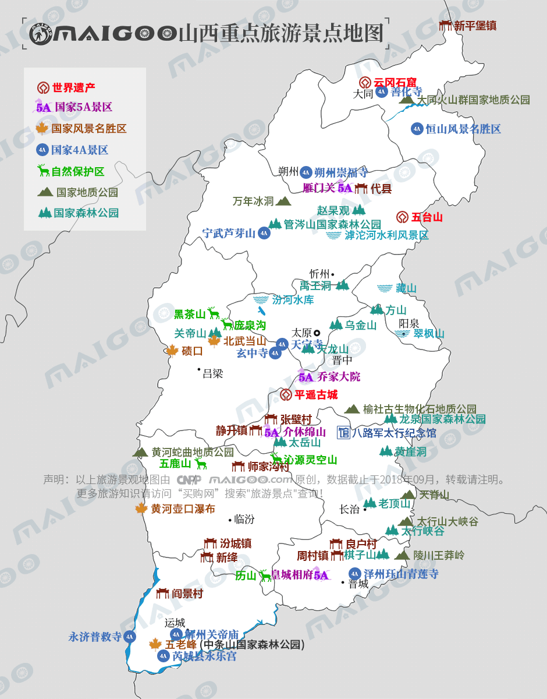

| | | | | |
| - | - | - | - | - |
|<b>别名</b>|晋，三晋||<b>著名景点</b>|五台山、平遥古城、云冈石窟、乔家大院、皇城相府等|
|<b>行政区类别</b>|省级行政区||<b>机 场</b>|太原武宿国际机场、运城关公机场、长治王村机场、大同云冈机场等|
|<b>所属地区</b>|中国华北||<b>火车站</b>|太原站、太原南站、大同站等|
|<b>下辖地区</b>|11个地级市||<b>车牌代码</b>|晋A-晋M|
|<b>电话区号</b>|0349—0359||<b>GDP</b>|-|
|<b>邮政区码</b>|030000—048000||<b>人均GDP</b>|-|
|<b>地理位置</b>|太行山以西，吕梁山以东；黄河中游东岸||-|-|
|<b>面 积</b>|15.67万平方千米||-|-|
|<b>人 口</b>|3702.35万人（2017年常住总人口）||-|-|
|<b>方 言</b>|晋语、中原官话||<b>行政区划代码</b>|140000|
|<b>气候条件</b>|温带大陆性季风气候||-|-|
| <b>山西生活文化</b> | <b>山西特色文化</b> | <b>山西曲艺文化</b> | <b>山西建筑文化</b> | <b>山西宗教文化</b> |
| - | - | - | - | - |
| <a href="javascript:;" onclick="live(this);">习俗/民俗</a> | <a href="javascript:;" onclick="feature(this);">红色文化</a> | <a href="javascript:;" onclick="art(this);">山西蒲剧</a> | <a href="javascript:;" onclick="building(this);">山西居民</a> | <a href="javascript:;" onclick="religion(this);">山西宗教/庙会</a> |
| <a href="javascript:;" onclick="live(this);">方言文化</a> | <a href="javascript:;" onclick="feature(this);">山西民歌</a> | <a href="javascript:;" onclick="art(this);">山西晋剧</a> | - | - |
| <a href="javascript:;" onclick="live(this);">节日文化</a> | <a href="javascript:;" onclick="feature(this);">晋商文化</a> | <a href="javascript:;" onclick="art(this);">北路梆子</a> | - | - |
| <a href="javascript:;" onclick="live(this);">嫁娶文化</a> | <a href="javascript:;" onclick="feature(this);">踢鼓秧歌</a> | <a href="javascript:;" onclick="art(this);">上党梆子</a> |-|-|
| <a href="javascript:;" onclick="live(this);">饮食文化</a> | <a href="javascript:;" onclick="feature(this);">威风锣鼓</a> | -|-|-|
| <a href="javascript:;" onclick="live(this);">山西禁忌</a> | <a href="javascript:;" onclick="feature(this);">山西心意拳</a> |-| -|-|
|-| <a href="javascript:;" onclick="feature(this);">广灵剪纸</a> |-|-|-|
|-| <a href="javascript:;" onclick="feature(this);">山西面塑</a> |-|-|-|
|-| <a href="javascript:;" onclick="feature(this);">山西炕围画</a> |-|-|-|
|-| <a href="javascript:;" onclick="feature(this);">山西旺火</a> |-|-|-|
## <i class="fa fa-file-text-o"></i>&nbsp;目录（Table of Contents）
+ [I. 总路线图（暂无）](#one)
+ [II. 景点](#two)
+ [III. 路线规划（暂无）](#three)
<h2 id="two"><i class="fa fa-star-o"></i>&nbsp;景点</h2>
